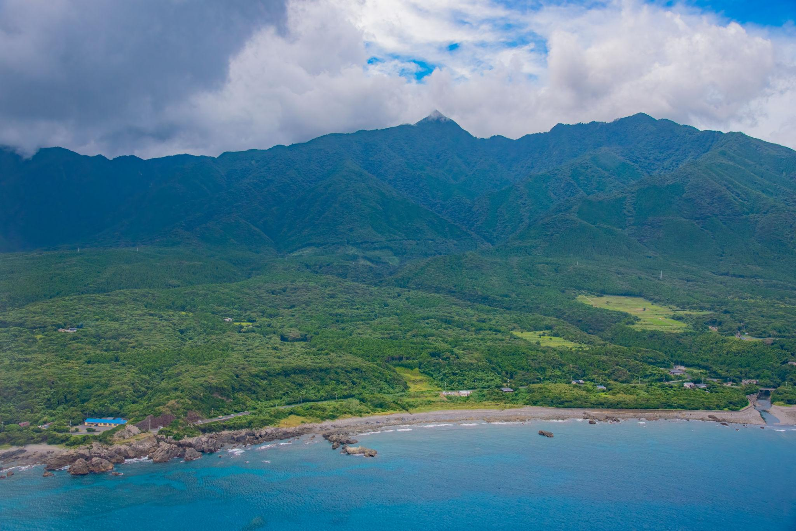
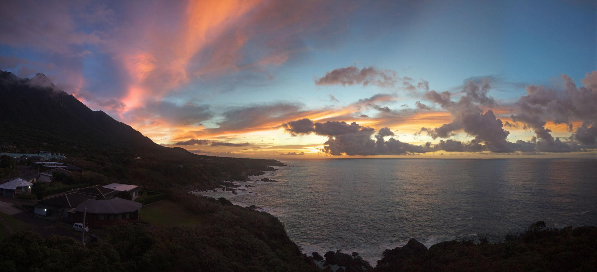
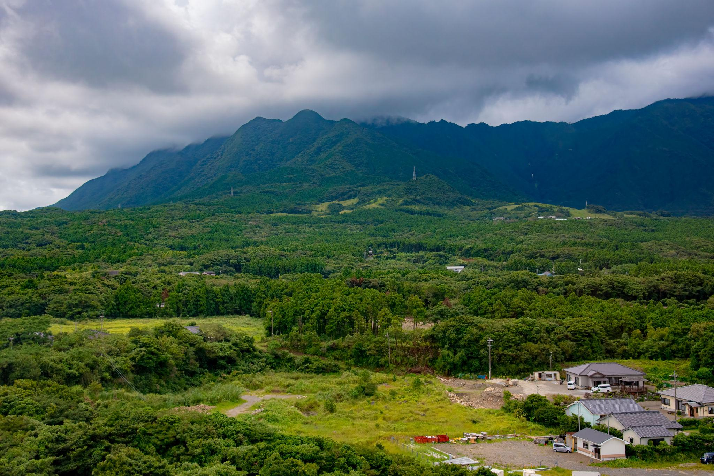
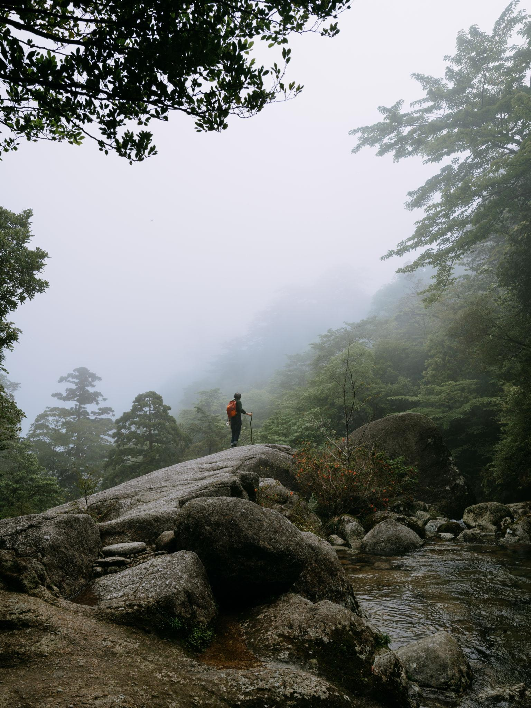
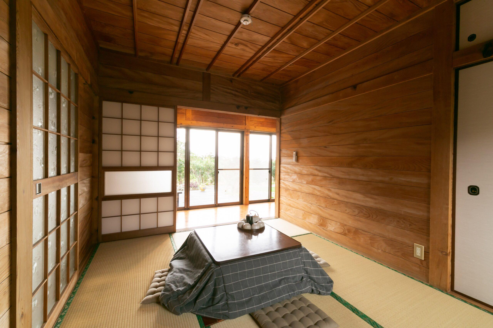
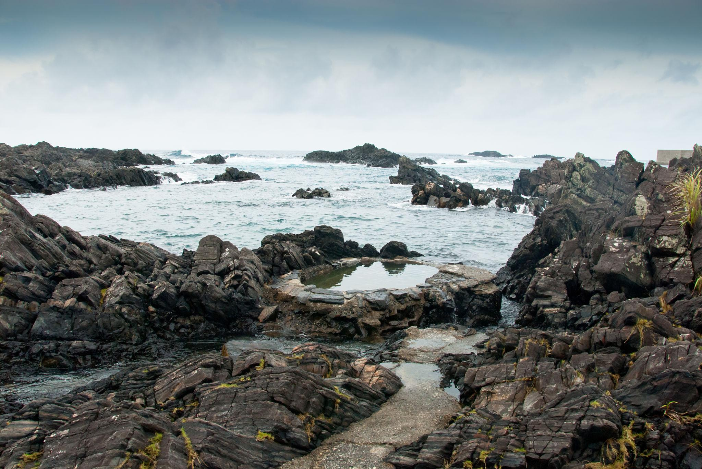
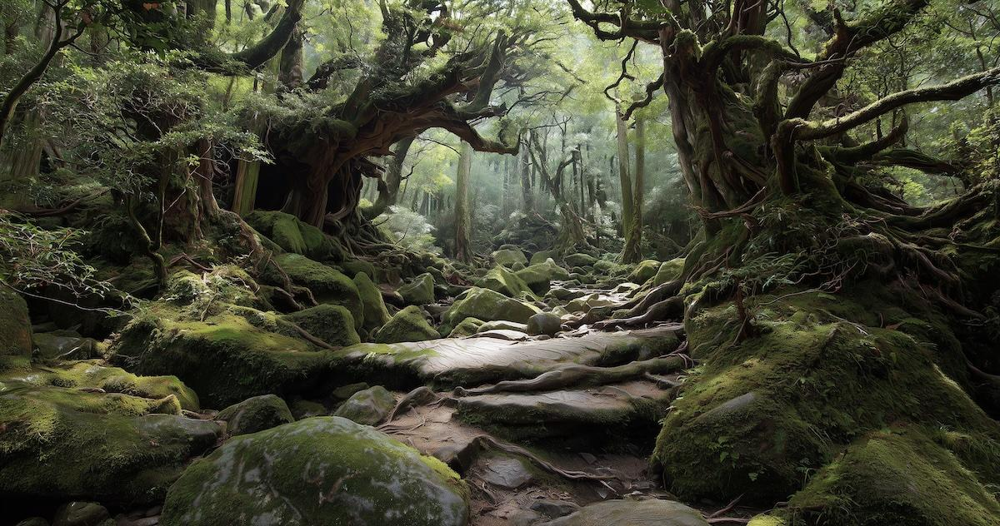

Una isla cubierta por bosques ancestrales, lluvia constante y senderos envueltos en niebla que inspiraron el espíritu de Princess Mononoke y el universo cinematográfico de Studio Ghibli.
Ver paquetes →Yakushima es una isla donde la naturaleza parece respirar lentamente. Los cedros milenarios, la niebla suspendida entre montañas y la lluvia constante crean una experiencia profundamente contemplativa y cinematográfica.



Senderos cubiertos de musgo, raíces gigantes y atmósferas húmedas que parecen escenas vivas de Princess Mononoke.

Hospedaje tradicional japonés, baños termales naturales y noches silenciosas acompañadas por lluvia suave.

Paisajes cinematográficos, niebla y naturaleza viva ideales para capturar una estética melancólica y mágica.
Viaje en ferry, check-in en ryokan ecológico y recorrido tranquilo por el pueblo.
Exploración del bosque que inspiró escenarios de Princess Mononoke.
Caminata entre senderos ferroviarios antiguos y bosques húmedos cubiertos de niebla.
Recorrido panorámico por playas, cascadas, faros y pequeños pueblos isleños.
Mañana libre y regreso en ferry hacia Kagoshima.
Primavera, verano lluvioso y otoño.
Moderado.

5 días / 4 noches explorando bosques ancestrales, ryokan tradicionales y senderos inspirados en Princess Mononoke.